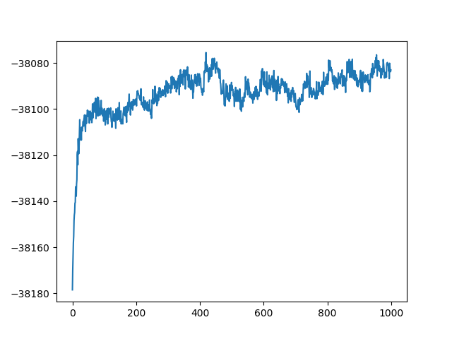

本文将详细讲解LDA模型的推导过程，并附有示例代码。
LDA是一种文档主题模型，它生成文档的过程是这样的：
- 从Dirichlet分布$\alpha$中采样，生成文档$i$的主题分布$\theta_i$
- 从多项式分布$\theta_i$中采样，生成文档$i$的第$j$个词的主题$z_{i,j}$
- 从Dirichlet分布$\beta$中采样，生成主题$z_{i,j}$对应的词语分布$\phi_{z_{i,j}}$
- 从多项式分布$\phi_{z_{i,j}}$中采样，最终生成词$w_{i,j}$
数学基础
二项分布
抛一硬币$n$次，硬币正面朝上的概率为$p$，反面朝上的概率为$1-p$，则骰子正面朝上$k$次的概率为
$$
P(X=k) = \binom{n}{k} p^k (1-p)^{n-k}
$$
记作二项分布$X \sim B(n, p)$。
二项分布的共轭先验分布：Beta分布
贝叶斯公式为
$$
P(\theta|X) = \frac{P(X|\theta)P(\theta)}{P(X)} \propto P(X|\theta)P(\theta)
$$
其中$P(X|\theta)$称为似然函数，$P(\theta)$称为先验分布，$P(\theta|X)$称为后验分布。如果先验分布和似然函数可以使得先验分布和后验分布的形式相同，则称先验分布和似然函数是共轭分布，$P(\theta)$是$P(\theta|X)$的共轭先验。
Beta分布有两个参数$\alpha>0$和$\beta>0$，其概率密度函数为
$$f(x ; \alpha, \beta)=\frac{1}{B(\alpha, \beta)} x^{\alpha-1}(1-x)^{\beta-1}$$
记为$X \sim Beta(\alpha, \beta)$，其中
$$B(\alpha, \beta)=\frac{\Gamma(\alpha) \Gamma(\beta)}{\Gamma(\alpha+\beta)}$$
将二项分布作为似然函数，得到
$$P(X | \theta) \propto \theta^{k}(1-\theta)^{n-k}$$
Beta分布作为先验分布，得到
$$
P(\theta) \propto \theta^{\alpha - 1}(1 - \theta)^{\beta - 1}
$$
于是有
$$ \begin{aligned} P(\theta | X) & \propto P(X|\theta)P(\theta) \\ & \propto \theta^{k}(1-\theta)^{n-k} \theta^{\alpha - 1}(1 - \theta)^{\beta - 1} \\ & = \theta^{\alpha+k-1} (1 - \theta)^{\beta+n-k-1} \end{aligned} $$可以发现，后验分布服从$Beta(\alpha+k, \beta+n-k)$，因此Beta分布是二项分布的共轭先验分布。
多项分布
多项分布是二项分布的推广形式。令$x_1+x_2+ \cdots x_k = n$，$p_1 + p_2 + \cdots + p_k = 1$，则多项分布的概率为
$$
f(x_1, x_2, \cdots x_k | n, p_1, p_2, \cdots, p_k) = \frac{n!}{x_1!\cdots x_k!} p_1^{n_1} \cdots p_k^{n_k}
$$
记为$X \sim Mult(n, p_1, \cdots, p_n)$。
多项分布的共轭先验分布：Dirichlet分布
Dirichlet分布的概率密度函数为
$$
f(p_1, p_2, \cdots, p_k | \alpha_1, \alpha_2, \cdots \alpha_k) = \frac{1}{\Delta(\alpha_1, \cdots, \alpha_k)} p_1^{\alpha_1-1}\cdots p_k^{\alpha_k-1}
$$
其中
$$\Delta(\alpha_1, \cdots, \alpha_k)=\frac{\Gamma(\alpha_1)\cdots\Gamma(\alpha_k)}{\Gamma(\alpha_1+\cdots+\alpha_k)}$$
记为$P \sim Dir(\alpha_1, \cdots, \alpha_k)$。它的期望为$E(p_i) = \frac{\alpha_i}{\sum_{j=1}^k \alpha_j}$。
将多项分布作为似然函数，得到
$$P(X | \theta_1, \cdots, \theta_k) \propto \theta_1^{n_1}\cdots\theta_k^{n_k}$$
Dirichlet分布作为先验分布，得到
$$
P(\theta_1, \cdots, \theta_k) \propto \theta_1^{\alpha_1 - 1}\cdots\theta_k^{\alpha_k - 1}
$$
于是有
$$ \begin{aligned} P(\theta_1, \cdots, \theta_k | X) & \propto P(X|\theta_1, \cdots, \theta_k)P(\theta_1, \cdots, \theta_k) \\ & \propto \theta_1^{n_1}\cdots\theta_k^{n_k} \theta_1^{\alpha_1 - 1}\cdots\theta_k^{\alpha_k - 1} \\ & = \theta_1^{\alpha_1+n_1-1}\cdots\theta_k^{\alpha_k+n_k-1} \end{aligned} $$后验分布也服从Dirichlet分布，因此Dirichlet分布是多项分布的共轭先验分布。
LDA模型
LDA模型的参数：
- $\vec{\alpha}$：语料级别的参数，用于生成每篇文档的主题分布
- $\vec{\beta}$：语料级别的参数，用于生成每个主题的词汇分布
- $\Phi$：语料级别的参数，每个主题的词汇分布
- $\Theta$：文档级别的参数，每个文档的主题分布
- $z_{m,n}$：词级别的参数，每个词对应的主题
LDA模型生成文档的过程：
- 对于每个主题$z_k$（$k\in [1, K]$）
- 生成主题词汇分布$\vec{\phi}_k \sim Dir(\vec{\beta})$
- 对于每篇文档$d_m$（$m \in [1, M]$）
- 生成文档主题分布$\vec{\theta}_m \sim Dir(\vec{\alpha})$
- 生成文档长度$N_m \sim Poiss(\xi)$
- 对于文档中的每个词$w_{m,n}$（$n \in [1, N_m]$）
- 生成主题$z_{m,n} \sim Mult(\vec{\theta}_m)$
- 生成词汇$w _ {m,n} \sim Mult(\vec{\phi} _ {z _ {m,n}})$
第$m$篇文档中的第$n$个词是$t$的概率为
$$P\left(w_{m, n}=t | \vec{\theta}_{m}, \Phi\right)=\sum_{k=1}^{K} P\left(w_{m, n}=t | \vec{\phi}_{k}\right) P\left(z_{m, n}=k | \vec{\theta}_{m}\right)$$文档$m$中词、隐变量和参数的联合概率分布为
$$P\left(\vec{w}_{m}, \vec{z}_{m}, \vec{\theta}_{m}, \Phi | \vec{\alpha}, \vec{\beta}\right)=P\left(\vec{\theta}_{m} | \vec{\alpha}\right) P(\Phi | \vec{\beta}) \prod_{n=1}^{N_{m}} P\left(w_{m, n} | \vec{\phi}_{z_{m, n}}\right) P\left(z_{m, n} | \vec{\theta}_{m}\right)$$所有文档的联合概率分布为
$$P(\mathcal{W}, \mathcal{Z}, \Theta, \Phi | \vec{\alpha}, \vec{\beta})=\prod_{k=1}^{K} P\left(\vec{\phi}_{k} | \vec{\beta}\right) \prod_{m=1}^{M}\left(P\left(\vec{\theta}_{m} | \vec{\alpha}\right) \prod_{n=1}^{N_{m}} P\left(w_{m, n} | \vec{\phi}_{z_{m, n}}\right) P\left(z_{m, n} | \vec{\theta}_{m}\right)\right)$$Gibbs采样
Gibbs采样是一种特殊的马尔科夫链采样方法。已知观测值为$y$，给定一个带有参数的向量$\theta = (\theta_1, \theta_2, \cdots, \theta_d)$，若$\theta_j^t$表示$\theta_j$在第$t$次迭代的采样值，则该采样值随机地取自概率分布$p(\theta_j^t | \theta_1^t, \cdots, \theta_{j-1}^t, \theta_{j+1}^{t-1}, \cdots, \theta_{d}^{t-1}, y)$。
用Gibbs采样训练LDA模型
求解联合概率
由于$\Theta$和$\Phi$分别是由$\alpha$和$\beta$生成的，因此可以将$P(\mathcal{W}, \mathcal{Z}, \Theta, \Phi | \vec{\alpha}, \vec{\beta})$分解为
$$
P(\mathcal{W}, \mathcal{Z}, \Theta, \Phi | \vec{\alpha}, \vec{\beta}) = P(\mathcal{W}, \mathcal{Z}| \vec{\alpha}, \vec{\beta}) = P(\mathcal{W}| \mathcal{Z}, \vec{\beta}) P(\mathcal{Z}| \vec{\alpha})
$$
其中$P(\mathcal{W}| \mathcal{Z}, \vec{\beta})$表示根据确定的主题$\mathcal{Z}$和词分布的先验分布参数$\vec{\beta}$采样词的过程，$P(\mathcal{Z}| \vec{\alpha})$表示根据主题分布的先验分布参数$\vec{\alpha}$采样主题的过程，这两者是独立的，可以分别计算。
$$ \begin{aligned} P(\mathcal{W}| \mathcal{Z}, \vec{\beta}) =& \int P(\mathcal{W}| \mathcal{Z}, \Phi) P(\Phi | \vec{\beta}) d\Phi \end{aligned} $$由于文档中每个词的生成是独立的，且每个词都服从多项分布，因此$P(\mathcal{W}| \mathcal{Z}, \Phi)$可以写成每个主题中每个词出现的概率的乘积，即
$$ \begin{aligned} P(\mathcal{W}| \mathcal{Z}, \Phi) =& \prod_{m=1}^M \prod_{n=1}^{N_m} P(w_{m,n} | \vec{\phi}_{z_{m,n}}) \\ =& \prod_{k=1}^K \prod_{t=1}^V \phi_{k,t}^{n_{\cdot,k,t}} \end{aligned} $$其中$n_{\cdot,k,t}$表示主题$k$中词$t$的出现次数。
由于$\vec{\phi}_k \sim Dir(\vec{\beta})$，有
$$
P(\Phi | \vec{\beta}) = \frac{1}{\Delta(\vec{\beta})} \prod_{k=1}^K \prod_{t=1}^V \phi_{k,t}^{\beta_t - 1}
$$
则
$$ \begin{aligned} P(\mathcal{W}| \mathcal{Z}, \vec{\beta}) =& \int P(\mathcal{W}| \mathcal{Z}, \Phi) P(\Phi | \vec{\beta}) d\Phi \\ =& \int \prod_{k=1}^K \prod_{t=1}^V \phi_{k,t}^{n_{\cdot,k,t}} \frac{1}{\Delta(\vec{\beta})} \prod_{k=1}^K \prod_{t=1}^V \phi_{k,t}^{\beta_t - 1} d\Phi \\ =& \int \prod_{k=1}^K \prod_{t=1}^V \frac{1}{\Delta(\vec{\beta})} \phi_{k,t}^{n_{\cdot,k,t} + \beta_t - 1} d\Phi \\ =& \prod_{k=1}^K \frac{\Delta(\vec{n}_k + \vec{\beta})}{\Delta(\vec{\beta})} \end{aligned} $$其中$\vec{n} _ k = [n _ {\cdot,k,t}], t=1,\cdots,V$。
$P(\mathcal{Z}| \vec{\alpha})$也可以用同样的方法计算：
$$
P(\mathcal{Z}| \vec{\alpha}) = \int P(\mathcal{Z} | \Theta) P(\Theta | \vec{\alpha}) d\Theta
$$
其中
$$ \begin{aligned} P(\mathcal{Z} | \Theta) =& \prod_{m=1}^M \prod_{n=1}^{N_m} P(z_{m,n} | d_m) \\ =& \prod_{m=1}^M \prod_{k=1}^K \theta_{m,k}^{n_{m,k,\cdot}} \end{aligned} $$$n_{m,k,\cdot}$是主题$k$在文章$m$中出现的次数。
由于$\vec{\theta}_k \sim Dir(\vec{\alpha})$，有
$$
P(\Theta | \vec{\alpha}) = \frac{1}{\Delta(\vec{\alpha})} \prod_{m=1}^M \prod_{k=1}^K \theta_{m,k}^{\alpha_k - 1}
$$
因此
$$ \begin{aligned} P(\mathcal{Z}| \vec{\alpha}) =& \int P(\mathcal{Z} | \Theta) P(\Theta | \vec{\alpha}) d\Theta \\ =& \int \prod_{m=1}^M \prod_{k=1}^K \theta_{m,k}^{n_{m,k,\cdot}} \frac{1}{\Delta(\vec{\alpha})} \prod_{m=1}^M \prod_{k=1}^K \theta_{m,k}^{\alpha_k - 1} d\Theta \\ =& \int \prod_{m=1}^M \prod_{k=1}^K \frac{1}{\Delta(\vec{\alpha})} \theta_{m,k}^{n_{m,k,\cdot} + \alpha_k - 1} d\Theta \\ =& \prod_{m=1}^M \frac{\Delta(\vec{n}_m + \vec{\alpha})}{\Delta(\vec{\alpha})} \end{aligned} $$其中$\vec{n} _ m = [n _ {m,k,\cdot}], k=1,\cdots,K$。
综上可得
$$ \begin{aligned} P(\mathcal{W}, \mathcal{Z}| \vec{\alpha}, \vec{\beta}) =& P(\mathcal{W}| \mathcal{Z}, \vec{\beta}) P(\mathcal{Z}| \vec{\alpha}) \\ =& \prod_{k=1}^K \frac{\Delta(\vec{n}_k + \vec{\beta})}{\Delta(\vec{\beta})} \prod_{m=1}^M \frac{\Delta(\vec{n}_m + \vec{\alpha})}{\Delta(\vec{\alpha})} \end{aligned} $$计算后验分布
下面根据联合分布$P(\mathcal{W}, \mathcal{Z})$求解后验分布$P(\mathcal{Z} | \mathcal{W})$。根据Gibbs取样的思路，我们需要逐一排除每个词的主题分配，再根据其他词的主题分配和观察到的单词计算当前词的主题，即求解$P\left(z_{m, n}=k | \mathcal{Z}^{\neg m, n}, \mathcal{W}\right)$。
$$ \begin{aligned} & P\left(z_{m, n}=k | \mathcal{Z}^{\neg m, n}, \mathcal{W}\right) \\ =& \frac{P(\mathcal{Z}, \mathcal{W})}{P(\mathcal{Z}^{\neg m, n}, \mathcal{W})} \\ =& \frac{\prod_{k=1}^K \frac{\Delta(\vec{n}_k + \vec{\beta})}{\Delta(\vec{\beta})} \prod_{m=1}^M \frac{\Delta(\vec{n}_m + \vec{\alpha})}{\Delta(\vec{\alpha})}}{\prod_{k=1}^K \frac{\Delta(\vec{n}_k^{\neg m, n} + \vec{\beta})}{\Delta(\vec{\beta})} \prod_{m=1}^M \frac{\Delta(\vec{n}_m^{\neg m, n} + \vec{\alpha})}{\Delta(\vec{\alpha})}} \\ =& \frac{\Delta(\vec{n}_k + \vec{\beta})}{\Delta(\vec{n}_k^{\neg m, n} + \vec{\beta})} \frac{\Delta(\vec{n}_k + \vec{\alpha})}{\Delta(\vec{n}_k^{\neg m, n} + \vec{\alpha})} \\ =& \frac{\Gamma\left(n_{\cdot,k,t}+\beta_{t}\right) \Gamma\left(\sum_{t=1}^{V} n_{\cdot, k, t}^{\neg m, n}+\beta_{t}\right)}{\Gamma\left(n_{\cdot, k, t}^{\neg m, n}+\beta_{t}\right) \Gamma\left(\sum_{t=1}^{V} n_{\cdot, k, t}+\beta_{t}\right)} \frac{\Gamma\left(n_{m, k, \cdot},+\alpha_{k}\right) \Gamma\left(\sum_{k=1}^{K} n_{m, k,\cdot}^{\neg m, n}+\alpha_{k}\right)}{\Gamma\left(n_{m, k, t}^{\neg m, n}+\alpha_{k}\right) \Gamma\left(\sum_{k=1}^{K} n_{m, k, \cdot}+\alpha_{k}\right)} \\ =& \frac{n_{\cdot, k, t}^{\neg m, n} +\beta_{t}-1}{\left[\sum_{t=1}^{V} n_{\cdot, k, t}^{\neg m, n}+\beta_{t}\right]-1} \frac{n_{m, k, \cdot}^{\neg m, n}+\alpha_{k}-1}{\left[\sum_{k=1}^{K} n_{m, k,\cdot}^{\neg m, n}+\alpha_{k}\right]-1} \\ \propto& \frac{n_{\cdot, k, t}^{\neg m, n} +\beta_{t}-1}{\left[\sum_{t=1}^{V} n_{\cdot, k, t}^{\neg m, n}+\beta_{t}\right]-1} (n_{m, k, \cdot}^{\neg m, n}+\alpha_{k}-1) \end{aligned} $$求解参数
最后一步是求解$\Theta$和$\Phi$。
$$P\left(\vec{\theta}_{m} | \vec{z}_{m}, \vec{\alpha}\right)=\frac{1}{Z_{\theta_{m}}} \prod_{n=1}^{N_{m}} P\left(z_{m, n} | \vec{\theta}_{m}\right) P\left(\vec{\theta}_{m} | \vec{\alpha}\right)=Dir\left(\vec{\theta}_{m} | \vec{n}_{m}+\vec{\alpha}\right)$$ $$P\left(\vec{\phi}_{k} | \mathcal{Z}, \mathcal{W}, \vec{\beta}\right)=\frac{1}{Z_{\phi_{k}}} \prod_{m, n: z_{m, n}=k} P\left(w_{m, n} | \vec{\phi}_{k}\right) P\left(\vec{\phi}_{k} | \vec{\beta}\right)=Dir\left(\vec{\phi}_{k} | \vec{n}_{k}+\vec{\beta}\right)$$求期望可得
$$\hat{\theta}_{m, k}=\frac{n_{m, k, \cdot}+\alpha_{k}}{\sum_{k=1}^{K} n_{m, k, \cdot}+\alpha_{k}}$$ $$\hat{\phi}_{k, t}=\frac{n_{\cdot,k,t}+\beta_{t}}{\sum_{t=1}^{V} n_{\cdot, k, t}+\beta_{t}}$$算法
- 将$n_{m, k, \cdot}$和$n_{\cdot,k,t}$初始化为0
- 令$\alpha_i = 50/K$，$\beta_i = 0.01$
- 随机初始化$z_{m,n}$
- 计算$n_{m, k, \cdot}$和$n_{\cdot,k,t}$
- 重复下列步骤
- $m = 1\cdots M$
- $n = 1 \cdots N_m$
- $n_{m, z_{m,n}, \cdot} = n_{m, z_{m,n}, \cdot} - 1$
- $n_{\cdot,z_{m,n},w_{m,n}} = n_{\cdot,z_{m,n},w_{m,n}} - 1$
- 根据后验分布$P\left(z_{m, n}=k | \mathcal{Z}^{\neg m, n}, \mathcal{W}\right)$采样得到$z_k$
- $n_{m, k, \cdot} = n_{m, k, \cdot} + 1$
- $n_{\cdot,k,w_{m,n}} = n_{\cdot,k,w_{m,n}} + 1$
- $n = 1 \cdots N_m$
- $m = 1\cdots M$
- 直到收敛
- 根据$n_{m, k, \cdot}$和$n_{\cdot,k,t}$计算$\Theta$和$\Phi$
似然函数
似然函数为
$$ \begin{aligned} P\left(\mathcal{W} | \Theta, \Phi\right)=& \prod_m \prod_n \sum_{k=1}^{K} P\left(w_{m, n}=w | z_{m,n}=k, \phi_{k, w_{m,n}} \right) P\left(z_{m, n}=k | \theta_{m,k}\right) \\ =& \prod_m \prod_n \sum_{k=1}^{K} \phi_{k, w_{m,n}} \theta_{m,k} \end{aligned} $$对数似然为
$$ \begin{aligned} \log{P\left(\mathcal{W} | \Theta, \Phi\right)} =& \log{\prod_m \prod_n \sum_{k=1}^{K} \phi_{k, w_{m,n}} \theta_{m,k}} \\ =& \sum_{m} \sum_n \log{\sum_{k=1}^{K} \phi_{k, w_{m,n}} \theta_{m,k}} \end{aligned} $$代码
以ICLR 2018-2019年论文题目为输入文档，进行K=3，max_step=1000的Gibbs Sampling，得到3个主题如下：
1 | Topics: |
可以看出，第一个主题因为没有去除停用词难以看出指向，第二个和第三个主题则分别是关于神经网络和学习的。
采样过程中，对数似然变化如下图所示：
